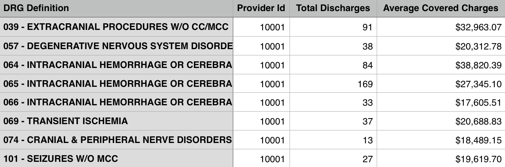
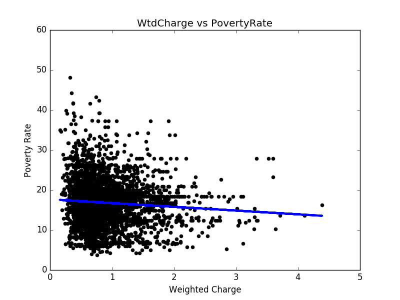
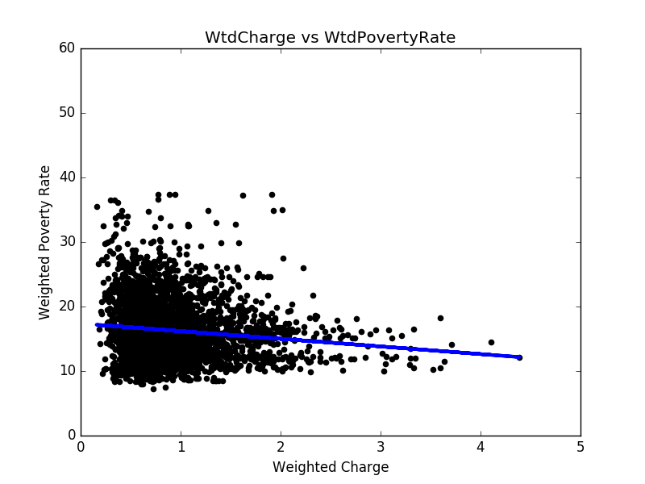

In general, restaurant prices are usually positively related to the local average household income. Our question is: Could we also observe similar phenomenon when it comes to hospital charges and local poverty rates? Namely, does a hospital arrange its charges according to its location? We utilize the Inpatient Prospective Payment System (IPPS) Provider Summary and poverty rate statistical data to build a model to explore the relationship between hospital charges and local poverty rates.
Data we explored
See Appendix for the sources of the hospital data and the poverty rate data. Note that both are data from year 2011. We have the original data about hospitals, including DRG(Diagnosis-Related Group), hospital addresses, zip codes and charges. There are 163,065 records in the file, including 3,337 hospitals and the top 100 DRGs. An example of records in the data is shown in Figure 1. We processed the hospital data in two different ways.

Figure 1: DRGs the hospital 10001 provides service about
For each hospital, we combine charges for all DRGs to generate a reasonable number representing its charge level. To do this, we first find the average charge for each DRG over the whole US. Then we divide the charge of the hospital by the average charge so that we have a charge level for each DRG and each hospital. This charge level can tell us how expensive the service provided by each hospital is for each DRG. Second we calculate the average level among all the DRGs one hospital provides service for. This average level is what we use to represent a hospital’s charge level.
We pick the hospital charges for 5 DRGs for analysis. First we find the top 5 most common DRGs (194, 690, 292, 392, 641) out of 100 DRGs. Second, since not all hospitals provide service for these 5 DRGs, for a fair comparison in our analysis we only include hospitals that provide service for all 5 DRGs. There are 2,664 such hospitals out of total 3,337 hospitals.
Another important set of data is the poverty rate data by county. To combine the hospital data and the poverty data, we find the latitude and longitude for each hospital with the help of a website (see 3) in Appendix A), by which we find the county for the hospital by using R packages. Then we combine the two sets of data by matching counties. Moreover, we add a new attribute the weighted poverty rate. We will explain what it is and how to generate it in the next section.
Key ideas
In the data collection stage, we found the local poverty rates corresponding to the hospital locations. However, this is not reasonable if a hospital is close to the boundary of its county and in fact closer to the centers of some other counties. For this reason, we update the original poverty rate corresponding to hospitals by using weighted poverty rates.
To generate the weighted poverty rate for a hospital, we take into consideration all the counties that are within 50 miles of the hospital. The weight of the poverty rates of the neighboring counties is based on the distance between each county center and the hospital. More precisely, the closer the county center is to the hospital, the higher weight its poverty rate has in the weighted poverty rate.
To get better linear regression models, we separate hospitals into five groups based on their locations: west, midwest, northeast, southwest and southeast. We design the following algorithm:
For each state, find the closest model among the models generated in Step 1. Then put each state into the group that corresponds to its closest model. A model is the closest if the sum of L2 distance of all hospital points in that state to the model is minimized.
Step 3:
Apply the least squares method to each group and then update the coefficients in the linear equations.
Step 4:
Repeat Step 2 and 3 until the clustering groups stay the same.
By this algorithm, we find 5 best ’fit’ least squares models.
Analysis
We used the hospital data in two ways:
We applied the least squares method to hospital charges versus poverty rates. The result is shown in Figure 2. After the poverty rate is updated, the linear regression result is improved. In Figure 3, we get a better linear regression. The mean squared error dropped from 34.06 to 21.47.

Figure 2: Hospital charges v.s. The original poverty rates

Figure 3: Hospital charges v.s. The weighted poverty rates
To further improve the linear regression results, we divide the states into five groups, according to Figure 4. By the least squares method, we apply linear regression to each region (see Figure 5 to Figure 9 for results). In most regions, there exists negative correlation between hospital charges and weighted poverty rates. However, in the prosperous western region, the poverty rates are mostly lower than 20%, and there are many expensive hospitals whose charge levels are higher than 3. As a result, it is hard to find the relation between weighted poverty rates and hospital charge levels, as shown in Figure 10.
Figure 4: Group distribution
Input
Output
Figure 4: Group distribution
Figure 3: Hospital charges v.s. The weighted poverty rates